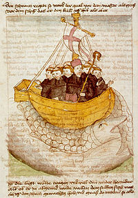

But it was 925 AD before Dicuil, an Irish monk records that his brethren had been visiting Thule for many years. He gives a description of that barren land that leaves little doubt that he is referring to Iceland. Saint Brendan’s sixth century Atlantic shuttles are set down in the twelfth century Navigato Sancti Brendani Abbati. Even Farley Mowat’s speculation in his book the Farfarers, of the westward trail of the fictitious Albans presents very plausible candidates for the white robed men of Vitramannaland, also known as Albana or Ireland the Great which lies somewhere near Vinland.
The Vikings took to the sea very early and they traveled far and wide, to Miklagård, the great city of Constantine, while the West Vikings, the scourge of Europe, swarmed over the islands of the North Atlantic and up the Seine to Paris. By 874 Iceland had been “discovered and the adventurous Norse ranges farther west to Greenland and the illusive Vinland around 1000 AD.
The North Atlantic voyager who should be considered the discoverer of the New World was Gunbjorn, who fell afoul of Iceland and emerged from the fog on the rocky skerries off the east coast of Greenland sometime in the late ninth century. The sequel to Gunbjorn is told in both the Greenlander’s saga and Erick’s saga which tell of Bjarne Herjolfsson’s wind and fog-swept coasting west of his intended Greenland landfall. Leif Erickson later followed his wake but naming his own landfalls, Helluland, Markland and Vinland the Good. Thorfinn Karlsefni attempted permanent settlement at Hop in Vinland. Constant skirmishes with the natives contributed to the abandonment of Hop after three years and the saga record retreats into relative silence on the Vinland activities. Attempts to interpret the Zeno map and Nicholo Zeno’s 16th century report of his ancestor’s westward explorations with the Earl of Orkney have occupied English speaking investigators since its publication by Hakluyt in 1582. The leading candidate for the identity of the Orkney leader is Henry Sinclair, Earl of the Norse controlled Orkney Islands. The controversy continues with contemporary members of Clan Sinclair Henry’s greatest champions. Following the Da vinci Code a spate of Templar related books have proliferated.
Other than brief references by the saga men and rune carvers, we are left with a few Atlantic coast clam shells found in a Danish midden, a chunk of Rhode Island anthracite coal found in Greenland, a Norse penny in a native context in Maine and a Norse spindle whorl in the artifact collection unearthed at L’Anse aux Meadows, in Newfoundland for verified physical evidence.
THE ARCHITECTURE OF THE NEWPORT TOWER
Only a rugged stone apse, its back braced against the wind and Atlantic waves, remains of the early Medieval Norse round church of Orphir on the west coast of the Orkney Islands. The puzzling arcaded round church in the village of Lanleff in northern Brittany purports to be a Templar sanctuary, but its style betrays a construction date before the founding of that religious order. The octagonal tower in the abandoned Monastery of Saint Bavo in Ghent hides its upper story above a stone groined vault. The Knights of the Order of Christ chose the octagon for their altar tower in the Templar convent in Tomar, Portugal. Both of the twin towers on the grounds of the Sulpician Grand Seminary in Montreal, Canada features a fireplace with a flue exiting on the side wall, while the other has two fireplaces with the same unusual flue arrangement. Sir Edward Peyto’s elegant open-arcaded, round windmill dominates the rolling hills around Chesterton in Warwickshire, England.
All of these buildings have been suggested as the inspiration or even prototype for the Newport Tower. Ranging in style from rude and rugged to the gracious Renaissance work of Inigo Jones, these buildings have more in common than circles and arches. Whether built in the eleventh century or the seventeenth, they would have been constructed with the same tools, the same brute strength of the workmen who spent the same amount of time preparing and completing the construction, and struggling with many of the same technical problems.
But there were differences in Newport. Though perched high above a protected bay, this Tower’s builder was on the wrong side of the wide Atlantic. In this investigation, I follow in the wake of a long line of worthy researchers on both sides of the ocean whose imaginations have been fired by the enigmatic icon in Newport’s Touro Park.
Read the full article (PDF): THE ARCHITECTURE OF THE NEWPORT TOWER by Suzanne Carlson, NEARA Journal Vol.35. No.1, Summer, 2001
Although the Roman conquest led to the extinction of the Gaulish language 2,000 years ago, a half dozen rare, surviving Gaulish/Latin bilingual inscriptions have enabled scholars to trace the origins of the Celtic language and many other European languages.
According to the study, Celtic branched in two directions from an Indo-European mother language around 3200 B.C. One version, Gaulish, which is also called Continental Celtic, stayed within the European mainland. A second, British version, referred to as Insular Celtic, moved in a single wave to Britain. Although the Roman conquest led to the extinction of the Gaulish language 2,000 years ago, a half dozen rare, surviving Gaulish/Latin bilingual inscriptions have enabled scholars to trace the origins of the Celtic language and many other European languages.
Read full article (PDF): EXTINCT LANGUAGE REVEALS CELTIC ORIGINS by Jennifer Viegas, reprint from Discovery News, 2003
Anderson, Rasmus B.ed. 1906 The Flatey Book and recently discovered Vatican Manuscripts, New York, Norroena Society.
Brondsted, Johannes 1960 The Vikings, London, Penguin
Goodwin, William B. 1946 The Ruins of Great Ireland in New England, Meador Publishing Company, Boston
Gordon, Cyrus H. 1974 Riddles in History, New York, Crown Publishers
Hakluyt, Richard 1582 Divers Voyages Touching on the Discoverie of America. London
Harbison, Peter 1976 The Archaeology of Ireland, Charles Scribner’s Sons, New York
Holand, Hjalmar R. 1940. Westward From Vinland, New York, Duell, Sloan & Pearce,
Ingstad, Helge 1966 Land Under the Pole Star, New York, St. Martin’s Press
Larsson, Mats G. 1990 Ett Odesdigert Vikingatag Sodra Sandy, SW. Atlandtis
Lindal, Sigurðr 1992 Saga Islands, Islendinga Fornrit, Reykjavik
Mowart, Farley 1965 West Vikings, Toronto, McClelland & Stewart.
Mowart, Farley 1998 The Farfarer: Before the Norse, Toronto, Key Porter Books.
Paulsson, Herman and Magnus Magnusson 1965 The Vinland Sagas: The Norse Discovery of America, New York, Penguin.
Percy, Bishop 1847 Northern Antiquities, London, Henry Bohn.
Pohl, Frederick J. 1972 The Viking Settlements of North America, New York, Clarkson N. Potter
Shetelig, Haakon and Hjalmar Falk 1978 Scandinavian Archaeology, New York: Hacker Art Books
Wachtmeister, Ingegerd, ed. 1984 Runstenar i Södermanland, Nyköping, Södermanlands Museum
Þorgillsson, Ari the Wise 1909ed Islendinabok og Landnamabok, Felagsprenntsmiðjan, Reykjavik.
Diplomatarium Norvegicum, Part of the Dokumentasjon Prosjektet, www.dokkpro.uio.no/dipl_norv/diplom_felt.html
Jan Barstad, President of Chronognostic Research Foundation, in her research on source material for the 2001 excavation at the Newport Tower, found this tantalizing document based on Papal Bulls from the Vatican Archives. Despite the obvious errors and the difficulty in interpreting the unfamiliar Norse original reports rendered into Church Latin and then into French, we felt that an English version would be a valuable contribution to our understanding of a 19th century view of Pre-Columbian America.
Viking lore tells of long migrations of Germanic tribes into Scandinavia and the eventual melding with the native heirs of the red paint people. I believe that Norse mythology reflects folk memory of real events. The united body that would one day be known as the Vikings, took to the sea very early and they traveled far and wide. The Swedes went east down the Russian rivers to Miklagård—the great city of Constantine. Ingvar took his East Vikings as far as the Caspian Sea. His story is recorded in a series of memorial rune stones in Södermanland, Sweden. The West Vikings, the scourge of Europe, swarmed over all the island
The North Atlantic voyager who should be considered the discoverer of the New World was Gunbjorn, who fell afoul of Iceland and emerged from the fog on the rocky skerries off the east coast of Greenland sometime in the late ninth century. North American settlement, for Greenland is certainly geologically and geographically part of North America, began with the arrival of the outlawed Eric the red, with his band of settlers in 985 in the fjords of the west coast of Greenland. This settlement, known as the “Eastern Settlement” spawned another outpost three hundred miles to the north which was known as the “Western Settlement”. The two settlements struggled to survive until the Western Settlement was abandoned around 1340 and the “east” settlement disappeared during the little ice age of the mid-16th century. The fate of Vinland the Good is not so clearly documented.
Both the Greenlander’s saga and Erick’s saga tell of Bjarne Herjolfsson’s wind and fog-swept coasting west of his intended Greenland landfall. Leif Erickson later followed his wake but naming his own landfalls, Helluland, Markland and Vinland the Good. Members of the Erickson clan continued exploring and his sister-in-law with her second husband, Thorfinn Karlsefni attempted permanent settlement at Hop in Vinland. Constant skirmishes with the natives contributed to the abandonment of Hop after three years and the saga record retreats into relative silence on the Vinland activities.
Other than brief references by the saga men and rune carvers, we are left with a few Atlantic coast clam shells found in a Danish midden, a chunk of Rhode Island anthracite coal found in Greenland, a Norse penny in a native context in Maine and a Norse spindle whorl in the artifact collection unearthed at L’Anse aux Meadows, in Newfoundland for verified physical evidence.
The “context for controversy” emerged back in the 1830’s when Carl Christian Rafn, Danish antiquarian, scholar, professor, Royal Councilor and possessor of formidable knowledge of the repertoire of Old Norse literature, published his Antiquae Americanae. In it, he presented a forceful case for Norse presence along the New England coast which included the Dighton writing rock and the Newport Tower. This enthusiastic support set off a flurry of interest, explorations, discoveries and proofs in a search for Leif’s Vinland. Armed with this or that theory, amateurs and professionals alike scoured the countryside looking for clues, especially runic inscriptions. Since those days words, phrases, pleas and prayers have been discerned carved on stone in a myriad of languages from a myriad of times to bolster the faith of diffusionists.
But it was 925 AD before Dicuil, an Irish monk, records that his brethren had been visiting Thule for many years. He gives a description of that barren land that leaves little doubt that he is referring to Iceland. Saint Brendan’s sixth century Atlantic shuttles are set down in the twelfth century Navigatio Sancti Brendani Abbati. Even Farley Mowat’s latest speculation in his book, the Farfarers, of the westward trail of his fictitious Albans presents very plausible candidates for the white robed men of Vitramannaland, also known as Albania or Ireland the Great which lies somewhere near Vinland.
The earliest extant version of The Voyage of Saint Brendan was recorded around 900 AD. There are over 100 manuscripts of the story across Europe, as well as many additional translations. The Voyage of Saint Brendan is an overtly Christian narrative, but also contains narratives of natural phenomena and fantastical events and places, which appealed to a broad populace. The Voyage of Saint Brendan contains many parallels and inter-textual references to the Voyage of Bran and the Voyage of Máel Dúin.
Chapter Synopsis:
Saint Barrid tells of his visit to the Island of Paradise, which prompts Brendan to go in search of the isle.
NEARA Journal Vol 26, No 3&4 69-92
Anderson, Rasmus B.ed. 1906 The Flatey Book and recently discovered Vatican Manuscripts, New York, Norroena Society.
Brondsted, Johannes 1960 The Vikings, London, Penguin
Goodwin, William B. 1946 The Ruins of Great Ireland in New England, Meador Publishing Company, Boston
Gordon, Cyrus H. 1974 Riddles in History, New York, Crown Publishers
Hakluyt, Richard 1582 Divers Voyages Touching on the Discoverie of America. London
Harbison, Peter 1976 The Archaeology of Ireland, Charles Scribner’s Sons, New York
Holand, Hjalmar R. 1940. Westward From Vinland, New York, Duell, Sloan & Pearce,
Ingstad, Helge 1966 Land Under the Pole Star, New York, St. Martin’s Press
Larsson, Mats G. 1990 Ett Odesdigert Vikingatag Sodra Sandy, SW. Atlandtis
Lindal, Sigurðr 1992 Saga Islands, Islendinga Fornrit, Reykjavik
Mowart, Farley 1965 West Vikings, Toronto, McClelland & Stewart.
Mowart, Farley 1998 The Farfarer: Before the Norse, Toronto, Key Porter Books.
Paulsson, Herman and Magnus Magnusson 1965 The Vinland Sagas: The Norse Discovery of America, New York, Penguin.
Percy, Bishop 1847 Northern Antiquities, London, Henry Bohn.
Pohl, Frederick J. 1972 The Viking Settlements of North America, New York, Clarkson N. Potter
Shetelig, Haakon and Hjalmar Falk 1978 Scandinavian Archaeology, New York: Hacker Art Books
Wachtmeister, Ingegerd, ed. 1984 Runstenar i Södermanland, Nyköping, Södermanlands Museum
Þorgillsson, Ari the Wise 1909ed Islendinabok og Landnamabok, Felagsprenntsmiðjan, Reykjavik.
Diplomatarium Norvegicum, Part of the Dokumentasjon Prosjektet, www.dokkpro.uio.no/dipl_norv/diplom_felt.html